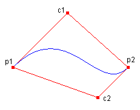
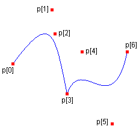

A Bézier spline is defined by four points: a start point, two control points, and an end point. The following example draws a Bézier spline with start point (10, 100) and end point (200, 100). The control points are (100, 10) and (150, 150):
Point p1(10, 100); // start point
Point c1(100, 10); // first control point
Point c2(150, 150); // second control point
Point p2(200, 100); // end point
Pen pen(Color(255, 0, 0, 255));
graphics.DrawBezier(&pen, p1, c1, c2, p2);
The following illustration shows the resulting Bézier spline along with its start point, control points, and end point. The illustration also shows the spline's convex hull, which is a polygon formed by connecting the four points with straight lines.

You can use the DrawBeziers method of the Graphics class to draw a sequence of connected Bézier splines. The following example draws a curve that consists of two connected Bézier splines. The end point of the first Bézier spline is the start point of the second Bézier spline.
Point p[] = {
Point(10, 100), // start point of first spline
Point(75, 10), // first control point of first spline
Point(80, 50), // second control point of first spline
Point(100, 150), // end point of first spline and
// start point of second spline
Point(125, 80), // first control point of second spline
Point(175, 200), // second control point of second spline
Point(200, 80)}; // end point of second spline
Pen pen(Color(255, 0, 0, 255));
graphics.DrawBeziers(&pen, p, 7);
The following illustration shows the connected splines along with the seven points.

Â
Â